01
SVGaberratio / Paired
Seven equal-width cells. The original mark sits exactly at the centre.
Lettering / Pair studies
Keep the centre intact. Match the width and height of b and ti, then compare the shorter name with the full name. All rows use the same letter size and baseline.
Seven equal-width cells. The original mark sits exactly at the centre.
The same b/ti pairing, with the terminal n retained.
A small opening in b, opposite the lower opening in the joined ti.



b and ti each occupy a 44 × 60 unit cell. In study 03, the 6-unit gaps below their counters face opposite ways. The central e and a remain rotational counterparts; the outer pairs aim for balance while keeping the letters readable.